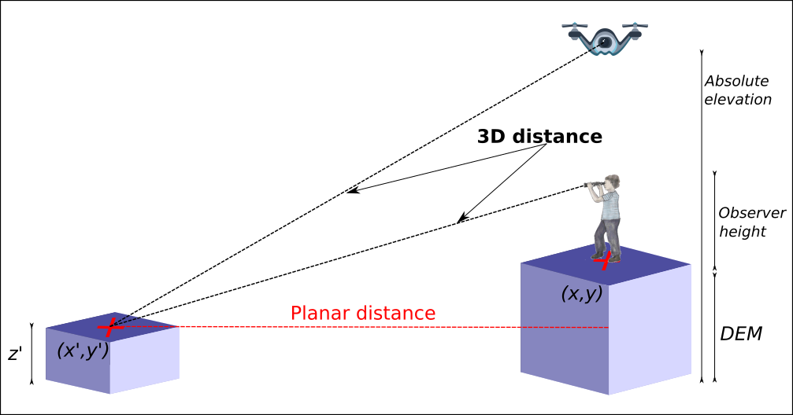
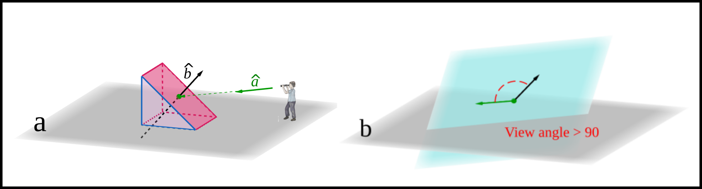

Depending on the purpose of the study, one can be interested in searching the closest position to observe a given territory while for others, having a frontal view can be more relevant. In some cases, the objective could be the combined balance between the closest and the most frontal view, in order to evaluate how much of the human field of view is occupied by a given object (solid angle).
r.survey is deeply based on the powerful r.viewshed GRASS GIS module.
r.survey wants to provide the user the necessary information to answer questions such as:
A map containing a set of points describing the locations of the observer and a digital elevation model (DEM) are the mandatory inputs for r.survey. It is very importante that all observation points have different categories, i.e. cat values (see the examples below). In addition, maps of buildings and trees, portraying height information, can be used to alter the DEM. In the case of trees map, apart from the height value, a third column in the attribute table has to contain the standard deviation value related to the heigh. This is used to simulate the rougness of forested areas.
Many other options can be set according to the aim of the analysis, such as: observer height respect to the ground or respect to an elevation datum (absolute elevation), maximum distance to perform the calculations, a view-angle threshold to exclude, a priori, cell oriented almost perpendicularly to the lines of sight, the average size of the observed object. The input points map must be provided to the tool as a vector layer. In case it represents the positions of a UAV, an helicopter or of a satellite, it must include an attribute field containing absolute elevation values with respect to a vertical datum (the same datum used by the input DEM). Observer height (respect to the ground, the default is 1.75 m) and maximum distance of observation (default is 1000 m) are parameters needed by the r.viewshed module. The object radius is used to approximate, with an equivalent circle, the minimum size of an object centered in the cells center and oriented according to the slope and aspect of the cells. Since r.survey produces different types of outputs, a name to be used for the prefix of the output maps is requested.
3D Distance is the three dimensional linear distance between a viewpoint and a target pixel (see the illutratio bellow). The min3dDistance map portrays the value of the minimum three-dimensional distance between each pixel and the closest viewpoint, in meters.

Given a viewpoint, r.survey calculate the unit vector describing direction and sense of the line of sight between that viewpoint and each visible pixel (see illustration bellow). We define View Angle as the angle between the unit vector representing the line of sight and the unit vector normal to the terrain surface in each pixel. The maxViewAngle map shows the value of the maximum View Angle between each pixel and the viewpoints, in degrees. It is a measure of the most frontal view each single cell is visible from. View angle output is always larger than 90° and smaller than 180°.

Solid Angle is one of the best and most objective indicators for quantifying the visibility. The idea is that any observed object will be progressively less appreciable the more far away and the more tilted it is with regard to the viewpoint. As a consequence Solid Angle depends on the size of the observed object as well as on the distance and the orientation from where this object is observed. Solid Angle of a surface is, by definition, equal to the projected spherical surface in the evolving sphere divided by the square of the radius of the sphere. As an aproximation, we use the ellipse surface area in place of the projected spherical surface in the evolving sphere. The maxSolidAngle map shows the value of the maximum Solid Angle (expressed in steradians) among those measured from the different viewpoints. In this map, the closest pixels to the observation points have to be interpreted with special attention, considering that the error, respect to the real Solid Angle, can reach until the 10% in the immediate neighbor pixels. For reference: 1 sr is equal to approximately 3283 (deg2) square degrees and to 1.18 · 107 square minutes (min2). It means that 2 · 10-6 sr ≃ 23.6 min2. For comparison, letter acuity (the capacity to resolve a letter) is approximately 25 min2 for a human with perfect vision and in controlled conditions, that is, high contrast between the letters and the background.
Other three maps (pointOfViewWithMin3dDistance, pointOfViewWithMmaxAngle and pointOfViewWithMmaxSolidAngle) are used to register, in each cell, the identifier of the viewpoints from where an observer can get, respectively, (i) the minimum values of 3D Distance, (ii) the maximum values of View Angle and (iii) the maximum value of the Solid Angle. Another relevant output is the numberOfViews map which portraits the number of viewpoints from where each pixel is visible.
Multi-core processing is used by r.survey for reducing the computational time. When the aim is to derive the values of the visibility indexes along a given path (e.g. a road or a UAV track) viewpoints can be very dense in terms of number per unit of distance and the more the viewpoints are, the longer the computational time becomes.
Parallel computation was implemented exploiting the Python Multiprocessing library and the ability of GRASS GIS to set a temporary spatial region centered on the considered point without affecting the parallel computation of the other points.
g.region raster=dem v.build.polylines input=roads output=roads_poly cats=multi # Convert the road layer into polyline v.to.points input=roads_poly output=points_50 dmax=50 # A point is created each 50 meters ## Ensure that each point has an independent category value ## v.category input=points_50 output=points_50_del option=del cat=-1 v.category input=points_50_del output=points_50_add option=add cat=1
g.region raster=Synthetic_valley r.survey points=Two_viewpoints dem=Synthetic_valley output=example maxdist=3000 buildingsmap=Tower buildingsheigh=Altitude object_radius=20 nprocs=4
g.region raster=Synthetic_valley r.survey points=Two_viewpoints dem=Synthetic_valley output=example2 maxdist=3000 buildingsmap=Tower buildingsheigh=Altitude object_radius=20 nprocs=4 viewangle_threshold=100
g.region raster=Synthetic_valley r.survey -d points=Flight_viewpoints dem=Synthetic_valley output=example3 maxdist=3000 nprocs=4 obsabselev=Elevation